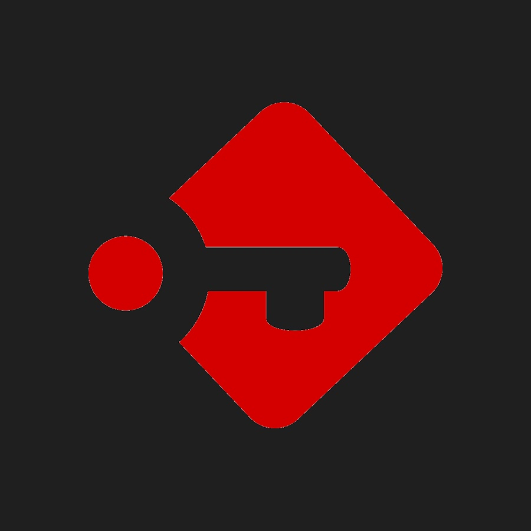

Ver más
SISTEMAS
Passbolt
Gestor de contraseñas enfocado a empresas, fácil de utilizar y muy seguro. Tiene gestión de usuarios y funciones muy interesantes como compartir contraseñas de forma segura...
SISTEMAS
Jellyfin
Servidor multimedia disponible en diferentes plataformas. Muy cómodo y serguro. Dispone de gestión de usuarios y muy facil de personalizar y configurar al 100%